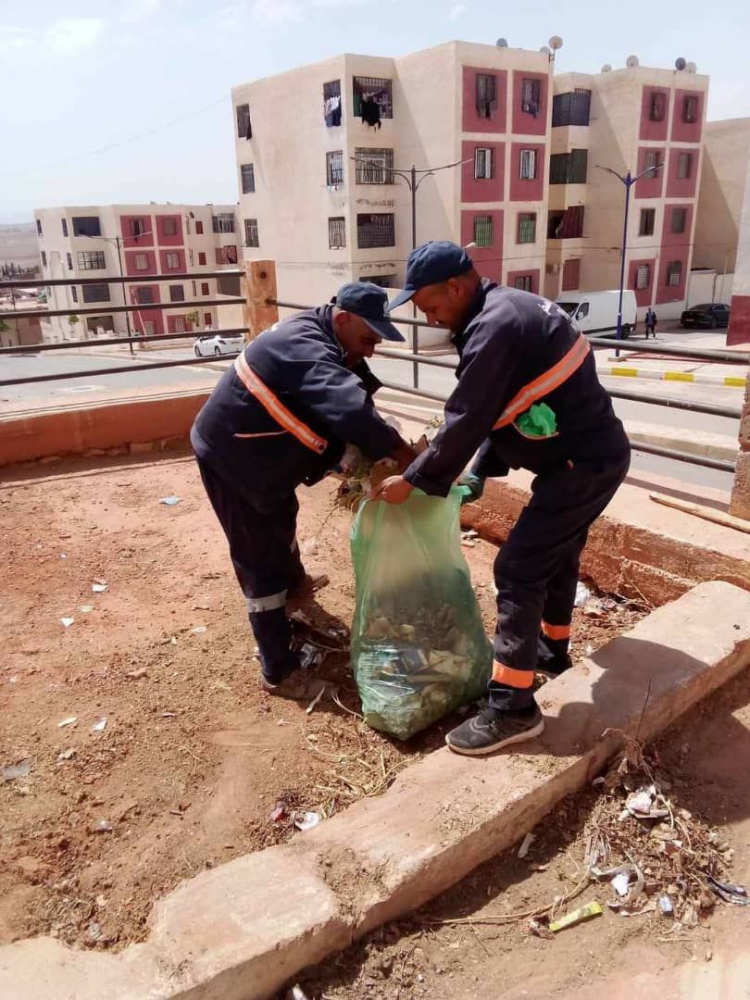
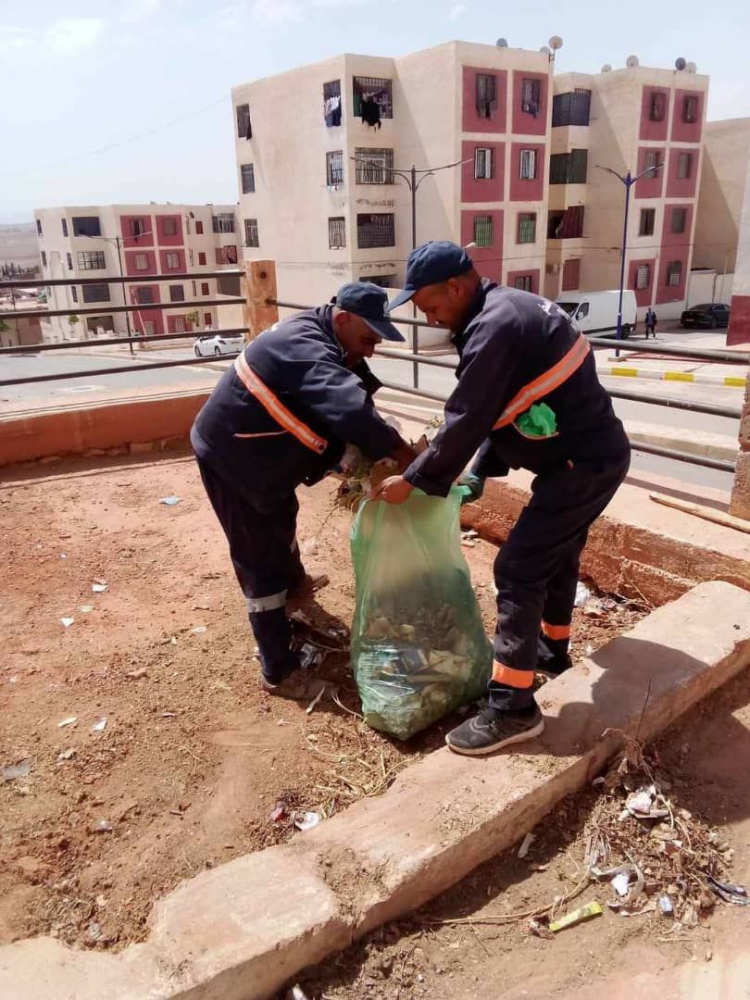
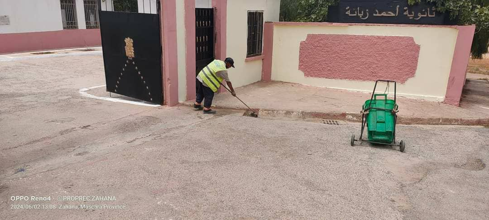
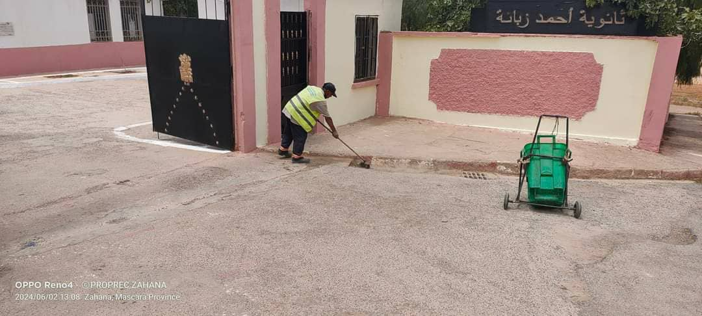

النوادي البيئية
نادي البيئة الخضراء
نادي البيئة الخضراء هو منظمة غير حكومية تركز على تعزيز الوعي البيئي من خلال الأنشطة التعليمية والتوعية المجتمعية. ينظم النادي ورش عمل وندوات للتوعية بأهمية الحفاظ على البيئة، ويشارك في حملات التشجير والنظافة. متابعة
نادي حماية الطبيعة
نادي حماية الطبيعة يهتم بحماية المناطق الطبيعية والمحميات، ويقوم بتنظيم رحلات ميدانية لتعليم الأعضاء كيفية الحفاظ على البيئة، بالإضافة إلى تنظيم حملات لتنظيف الشواطئ والغابات. متابعة

نادي أصدقاء البيئة
نادي أصدقاء البيئة يهدف إلى تعزيز المشاركة المجتمعية في حماية البيئة من خلال تنظيم مسابقات بيئية للمدارس والجامعات، وتشجيع الشباب على الانخراط في الأنشطة البيئية متابعة
أنشطة النوادي
النوادي البيئية تنظم مجموعة متنوعة من الأنشطة مثل حملات التنظيف، حملات التشجير، وورش العمل التعليمية حول إعادة التدوير والحفاظ على البيئة. من بين الأنشطة البارزة حملة تنظيف الشواطئ في ولاية معسكر التي نظمتها نادي حماية الطبيعة، حيث شارك أكثر من 100 متطوع وتم جمع 500 كجم من النفايات متابعة
أخبار النوادي
أخبار محدثة حول أحدث أنشطة وإنجازات النوادي البيئية. من الأخبار الحديثة مشاركة نادي أصدقاء البيئة في المؤتمر الوطني للبيئة والتنمية المستدامة، حيث قدم أعضاء النادي ورقة بحثية حول إدارة النفايات في المناطق الحضرية. متابعة
معرض الصور


 



 
